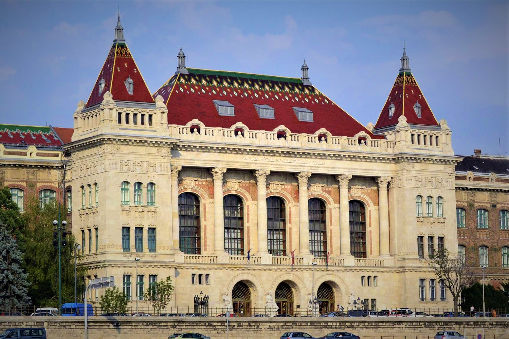

Tanulmányok
Pécsi Janus Pannonius Gimnázium
Középiskolai tanulmányaimat a Pécs belvárosában található Pécsi Janus Pannonius Gimnáziumban végeztem. 2014-től 2020 tavaszáig jártam a gimnáziumba egy hatosztályos osztályba, ami azt jelenti, hogy 2014 őszén a 7. osztályomat már a gimnázium tanulójaként kezdhettem. 11. osztálytól fogva járhattunk a gimnáziumban tanított összes tantárgyból két fakultációkra, amely fakultációkon a közép és emelt szintű érettségikre készítettek fel bennünket. Én személy szerint a Matematikát és a Fizikát választottam fakultációs tárgyamnak, melyekből 2020 tavaszán sikeres le is érettségiztem. A gimnáziumban eltöltött 6 évem alatt lehetőségem volt két idegen nyelv elsajátítására, ennek köszönhetően rendelkezem jelenlangol és német nyelvből is B2-es középfokú nyelvvizsgával. Ez az eredmény azonban iskolai szinten egyáltalán nem számított kimagaslónak, nem véletlenül került az intézmény Magyarország top 100 gimnáziuma közé (számos besorolás alapján) minden évben
Budapesti Műszaki és Gazdaságtudományi Egyetem 
Az egyetemi tanulmányaimat a BME-n (Budapesti Műszaki és Gazdaságtudományi Egyetem) kezdtem el 2020 őszén gólyaként a gépészmérnöki kar általános gépészmérnök szakán. Az egyetem maga Magyarország és Közép-Európa egyik legnagyobb preztissel rendelkező műszaki egyeteme és 1782-es alapításával a világ első műszaki egyeteme (Pontosabban az első olyan intézmén, amely egyetemi keretek között folytatott mérnökképzést). Ezen felül nem csak a szinvonalas oktatásával hanem szimplán a méretével is a magyarországi egyetemek élmezőzébe tartozik 8 karának körülbelül 24 000 hallhatójával.